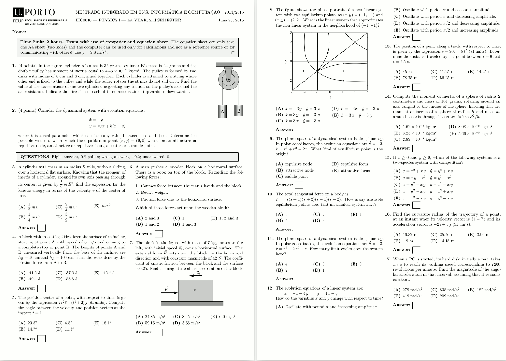

The LaTeX file created with the commands shown in the previous slide is then processed to produced a PDF file rendered in the figure below (the Portuguese version of this exam and many others are online at: (https://def.fe.up.pt/dinamica/exames.html)
